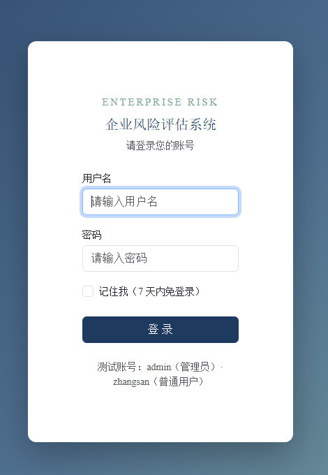
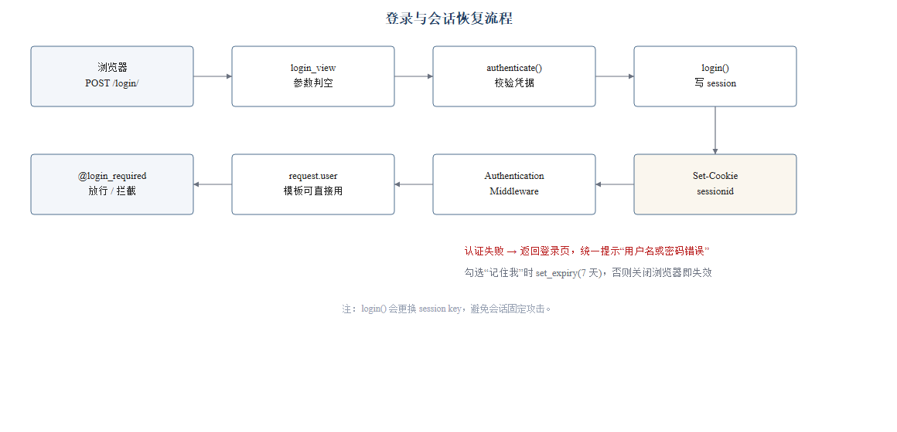

| ① 建账号 | ② 配路由 / 视图 | ③ 写模板 | ④ 加装饰器验证 |
|---|---|---|---|
| admin + zhangsan UserProfile 扩展 | /login/、/logout/ 视图 5 个分支 | CSRF、required 记住我、next | 302 → 登录 → 回跳 无 Token 403 |
| 用户名 | 密码 | 角色 | UserProfile | 能看到什么 |
|---|---|---|---|---|
| admin | Admin@2026 | 管理员（超级用户） | role=admin | 全部菜单 + 后台管理 |
| zhangsan | test123456 | 普通用户 | role=normal，信贷部 | 业务菜单，无后台入口 |
怎么建的：
createsuperuser 建 admincreate_user() 建 zhangsan，密码自动哈希UserProfile.objects.update_or_create() 补扩展记录密码怎么存的：
pbkdf2_sha256$1500000$...| URL | 视图 | 名称 |
|---|---|---|
/login/ | auth_views.login_view | login |
/logout/ | auth_views.logout_view | logout |
为什么单独放 auth_views.py：
name，模板里 {% url %} 反向解析LOGIN_URL = "/login/"urlpatterns = [
path("", views.index, name="index"),
path("login/", auth_views.login_view, name="login"),
path("logout/", auth_views.logout_view, name="logout"),
...
]
/login/?next=/enterprise/list/。
if request.user.is_authenticated:
return redirect("risk_app:index")
if request.method == "POST":
username = request.POST.get("username", "").strip()
password = request.POST.get("password", "")
remember = request.POST.get("remember")
if not username or not password:
error = "用户名和密码不能为空"
else:
user = authenticate(request, username=username,
password=password)
if user is not None:
login(request, user)
request.session.set_expiry(
604800 if remember else 0)
UserProfile.objects.get_or_create(
user=user, defaults={"role": "normal"})
return redirect(next_url or "risk_app:index")
error = "用户名或密码错误"
logout(request) 清会话，回登录页。

{% csrf_token %}，否则 POST 403type="password"required 让浏览器先拦一层{% if error %} 红色提示条| 选项 | set_expiry | 效果 |
|---|---|---|
| 勾选记住我 | 604800（7 天） | Cookie 有到期时间，7 天内免登录 |
| 不勾选 | 0 | Cookie 无到期时间，关浏览器即失效 |
实测：
_session_expiry=604800，Cookie 到期时间可见_session_expiry=0，Cookie 无 expires一个容易看错的地方：
不勾选时 get_expiry_age() 仍返回默认的 1209600，那是 Cookie 默认时长，
不代表会话没设置；要看 _session_expiry 和 Cookie 的 expires。

from django.contrib.auth.decorators import login_required
@login_required
def index(request):
...
@login_required
def enterprise_list(request):
...
LOGIN_URL，并带 nextnext 原页面$ curl -I /enterprise/list/ HTTP/1.1 302 Found Location: /login/?next=/enterprise/list/ $ curl -I / HTTP/1.1 302 Found Location: /login/?next=/ $ curl -X POST /login/ （不带 CSRF Token） HTTP 403
| username | password 前缀 | superuser |
|---|---|---|
| admin | pbkdf2_sha256$1500000$… | 1 |
| zhangsan | pbkdf2_sha256$1500000$… | 0 |
/enterprise/list/ → 302 /login/?next=/enterprise/list/；
登录后回跳该页；两个错误账号的提示完全一致；普通用户（zhangsan）看不到“后台管理”，管理员（admin）能看到。